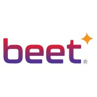

2025

BEET · SOUTHFIELD, MI
Machine Learning Intern
- Designed an end-to-end factory sensor and quality-inspection ML pipeline with Python, Pandas, BigQuery, and Vertex AI.
- Automated model selection and tuning across six classifier families, storing winning artifacts in MLflow.
- Standardized nine sensor tags into a consistent feature set for comparable retraining.